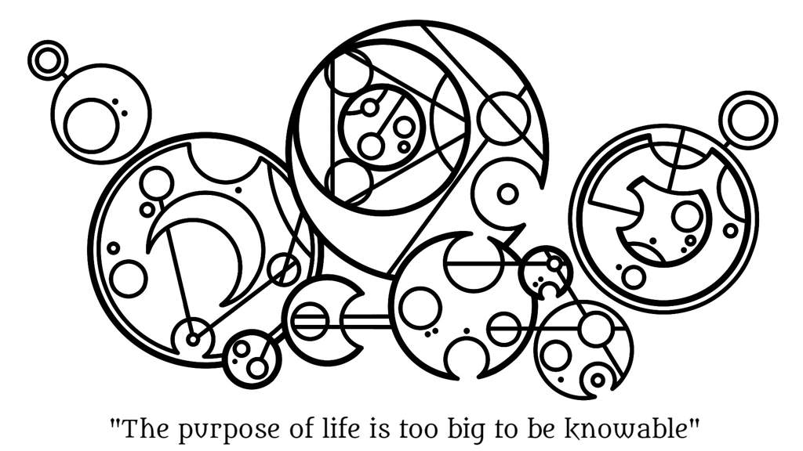

03/30/24
Headded to Florida to look at some rocket ships! I like space
03/12/24
Many people spend their life trying to find what they are ment to do. With the addition of the internet, any hobby can become a job. All it takes is an email adress and a little time to make videos on it. I think this is beautiful. I am seeing people explore their hobbies and even turning their jobs into more money on YouTube. I found a guy who works at a power plant, and he just makes videos on how it works!
03/07/24
Would you rather be a carrot or a worm?
02/29/24
Happy birthday to everyone who was born on such a unique day! Being born on a leap day is interesting. You age normally (of course) but your true borthday just gets skipped most if the time.
02/24/24

I think this is great. "The purpose of life is too big to be knowable."
42
02/22/24
Not everyone is going to stay in your life. The best thing we can do is create fond memories of them so that they can stay in our hearts forever.
02/19/24
The first blog post! Website is still in development, but this blog isn't a place for that. I have a Dev Log page for that. Instead, this space is for random thoughts.
I won't be editing them as nor after I type things, so it's only as I'm thinking what to type. I am only fixing spelling errors (Proboably).